Handwriting Analysis Result Sheet
Character-level classification with Grad-CAM visual explanations
Prototype category: Progressing well Characters analysed: 55
Classification summary
Character-level results and Grad-CAM
Grad-CAM highlights image regions that contributed to the selected model class. The heatmap explains model behaviour; it is not a diagnosis or proof that the prediction is correct. Confidence is the raw model confidence; letter-aware rules may change the final class for some letters.
| # | Expected letter | Raw model class | Final class | Confidence | Rule applied | Grad-CAM: character / heatmap / overlay |
|---|---|---|---|---|---|---|
| 1 | t | Corrected | Normal | 98.7% | Yes | 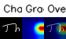 |
| 2 | h | Normal | Normal | 99.9% | No | 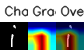 |
| 3 | i | Normal | Normal | 99.6% | No |  |
| 4 | s | Normal | Normal | 100.0% | No | 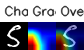 |
| 5 | i | Normal | Normal | 99.9% | No | 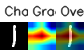 |
| 6 | s | Normal | Normal | 100.0% | No | 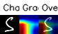 |
| 7 | a | Reversal | Reversal | 99.8% | No | 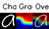 |
| 8 | s | Reversal | Reversal | 96.5% | No | 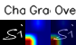 |
| 9 | i | Normal | Normal | 99.9% | No | 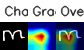 |
| 10 | m | Corrected | Corrected | 96.5% | No | 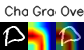 |
| 11 | p | Normal | Normal | 99.6% | No |  |
| 12 | l | Normal | Normal | 88.5% | No | 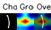 |
| 13 | e | Reversal | Reversal | 100.0% | No | 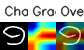 |
| 14 | t | Corrected | Normal | 100.0% | Yes | 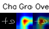 |
| 15 | e | Normal | Normal | 99.6% | No |  |
| 16 | x | Normal | Normal | 100.0% | No | 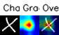 |
| 17 | t | Corrected | Normal | 62.8% | Yes | 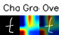 |
| 18 | t | Normal | Normal | 92.4% | No | 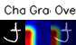 |
| 19 | o | Normal | Normal | 93.4% | No | 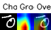 |
| 20 | t | Corrected | Normal | 71.8% | Yes | 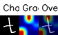 |
| 21 | e | Reversal | Reversal | 99.6% | No | 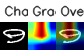 |
| 22 | s | Normal | Normal | 100.0% | No | 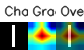 |
| 23 | t | Corrected | Normal | 99.6% | Yes | 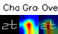 |
| 24 | t | Corrected | Normal | 100.0% | Yes | 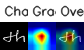 |
| 25 | h | Corrected | Corrected | 75.6% | No | 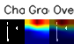 |
| 26 | e | Normal | Normal | 99.5% | No | 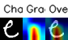 |
| 27 | m | Corrected | Corrected | 100.0% | No | 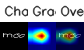 |
| 28 | o | Normal | Normal | 100.0% | No | 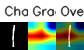 |
| 29 | d | Normal | Normal | 100.0% | No | 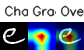 |
| 30 | e | Normal | Normal | 99.6% | No |  |
| 31 | l | Normal | Normal | 100.0% | No | 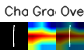 |
| 32 | o | Normal | Normal | 99.7% | No | 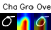 |
| 33 | f | Corrected | Corrected | 90.6% | No | |
| 34 | t | Corrected | Normal | 99.7% | Yes | 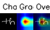 |
| 35 | h | Normal | Normal | 99.6% | No |  |
| 36 | e | Reversal | Reversal | 100.0% | No | 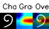 |
| 37 | l | Normal | Normal | 100.0% | No | 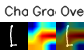 |
| 38 | e | Corrected | Corrected | 100.0% | No | 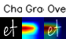 |
| 39 | t | Normal | Normal | 94.0% | No | 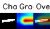 |
| 40 | t | Normal | Normal | 88.9% | No | 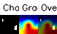 |
| 41 | e | Corrected | Corrected | 99.7% | No | 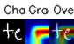 |
| 42 | r | Normal | Normal | 100.0% | No | 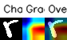 |
| 43 | d | Corrected | Corrected | 100.0% | No | 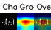 |
| 44 | e | Normal | Normal | 97.3% | No | 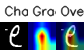 |
| 45 | t | Normal | Normal | 99.6% | No |  |
| 46 | e | Normal | Normal | 77.6% | No | 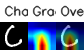 |
| 47 | c | Corrected | Corrected | 97.0% | No | 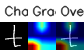 |
| 48 | t | Normal | Normal | 100.0% | No | 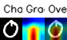 |
| 49 | o | Normal | Normal | 99.6% | No | 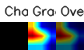 |
| 50 | r | Normal | Normal | 100.0% | No | 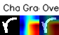 |
| 51 | m | Normal | Normal | 100.0% | No | 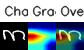 |
| 52 | o | Normal | Normal | 100.0% | No | 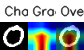 |
| 53 | d | Reversal | Reversal | 100.0% | No | 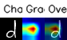 |
| 54 | e | Normal | Normal | 100.0% | No | 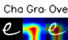 |
| 55 | l | Normal | Normal | 100.0% | No | 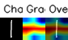 |